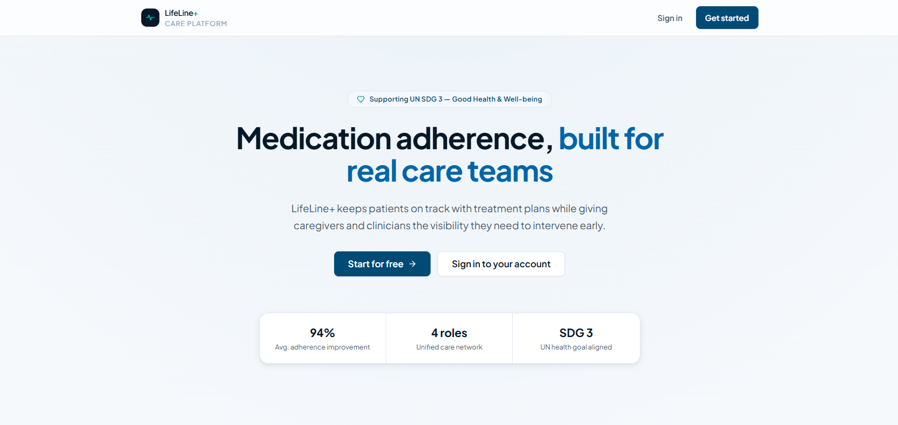
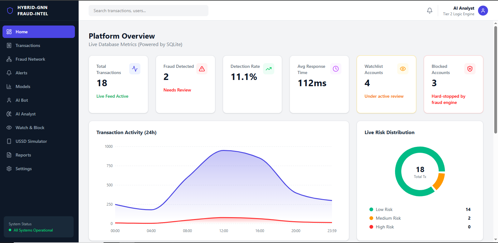
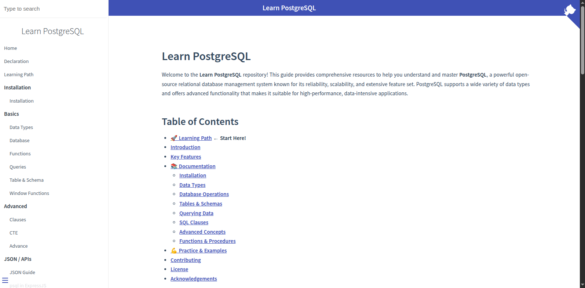

Web applications
Building applications with accounts, dashboards, forms, databases, and role-based access.
Next.js · TypeScript · Prisma · Auth.js
Software developer · Data · Community
I am Sidney Muriuki, a software developer building web applications and data-driven systems. I also lead community initiatives at Salamander Tech Hub, including developer events, hackathons, and technical programmes.
Nairobi, Kenya
01 / Focus
Building applications with accounts, dashboards, forms, databases, and role-based access.
Next.js · TypeScript · Prisma · Auth.js
Working with transaction data, graph models, and APIs for fraud-detection projects.
Python · FastAPI · PyTorch · Neo4j
Contributing to technical learning resources and organising developer events and hackathons.
Documentation · Events · Hackathons
02 / Projects
Web, data, and open-source projects I have worked on.

View projectHealth technology · SDG 3
Problem Patients, caregivers, and clinicians need a shared way to track medication routines, appointments, and health information.
Solution A role-based care platform for medication tracking, health records, appointment management, and care-team coordination.

View projectFintech · Machine learning
Problem Transaction-only checks can miss fraud rings, mule accounts, and other connected patterns in mobile-money activity.
Solution A team-built fraud platform that combines GNNs, XGBoost, graph data, and analyst-facing explanations.

View projectOpen-source education
Problem New PostgreSQL learners need one practical place to work through concepts and exercises.
Solution An open-source learning resource with guided lessons, quizzes, and exercises; I contributed documentation structure and Markdown content.
03 / Experience
Present
Coordinate community operations, events, and opportunities for developers and learners.
Feb — Aug 2025
Worked on automation tasks using data and AI tools.
Aug 2025
Completed a data science simulation covering analysis and business communication.
04 / Toolkit
Grouped by the type of work they support.
05 / Contact